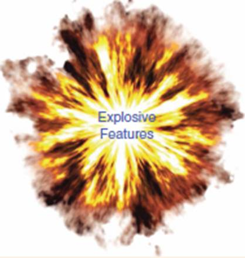
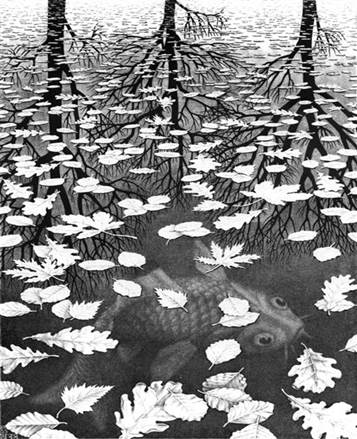

|

in conjunction with ICCV2017 Venice,
Italy, October 22~29 2017 Workshop
Chairs
News: Slides of two keynote speeches are available for downloading.
Please find the downloading link in the following. Program 0800 Welcome 0810-0100 Session 1: Oral Session ·
[0810] Class-specific
Reconstruction Transfer Learning via Sparse Low-rank Constraint, Shanshan Wang, Lei Zhang, Wangmeng Zuo ·
[0830]
DelugeNets: Deep Networks with Efficient and Flexible Cross-layer Information
Inflows, Jason Kuen, Xiangfei Kong,
Gang Wang, Ya-Peng Tan ·
[0850] Invited Talk: From Invariant Descriptors to Deep Pose Estimation, Pascal Fua (EPFL, Switzerland) (Slides) 1000-1030 Morning Break & Poster
Session ·
Vehicle Logo Retrieval Based on Hough Transform and
Deep Learning, Huan Li, Yujian Qin, Li
Wang ·
P-TELU : Parametric Tan Hyperbolic
Linear Unit Activation for Deep Neural Networks, Rahul Duggal, Anubha Gupta ·
Learning Efficient Deep Feature Representations via
Transgenerational Genetic Transmission of Environmental Information during
Evolutionary Synthesis of Deep Neural Networks, Mohammad Javad Shafiee, Elnaz Barshan, Francis Li,
Brendan Chwyl, Michelle Karg, Christian Scharfenberger, Alexander Wong ·
Large-Scale Content-Only Video
Recommendation, Joonseok Lee, Sami
Abu-El-Haija ·
Efficient Fine-grained Classification and Part
Localization Using One Compact Network, Xiyang
Dai, Ben Southall, Nhon Trinh, Bogdan Matei ·
Structured Images for RGB-D Action
Recognition, Pichao Wang, Shuang Wang,
Zhimin Gao, Yonghong Hou, Wanqing Li ·
Compact Feature Representation for Image
Classification Using ELMs, Dongshun
Cui, Guanghao Zhang, Wei Han, Liyanaarachchi Lekamalage Chamara Kasun, Kai
Hu, Guang-Bin Huang ·
Improved Descriptors for Patch
Matching and Reconstruction, Rahul
Mitra, Jiakai Zhang, Sanath Narayan, Shuaib Ahmed, Sharat Chandran, Arjun
Jain ·
Compact color texture descriptor based on rank
transform and product ordering in the RGB color space, Antonio Fernández, David Lima, Francesco Bianconi, Fabrizio Smeraldi
·
Spatial-Temporal Weighted Pyramid
using Spatial Orthogonal Pooling, Yusuke
Mukuta, Yoshitaka Ushiku, Tatsuya Harada ·
Double-task Deep Q-Network with Multiple views, Jun Chen, Tingzhu Bai, Xiangsheng Huang,
Xian Guo, Jianing Yang, Yuxing Yao ·
Automatic discovery of discriminative
parts as a quadratic assignment problem, Ronan
Sicre, Julien Rabin, Yannis Avrithis, Teddy Furon, Frederic Jurie, Ewa Kijak
·
UDNet: Up-Down Network for Compact and Efficient
Feature Representation in Image Super-Resolution, Chang Chen, Xinmei Tian, Zhiwei Xiong, Feng Wu ·
Enlightening Deep Neural Networks with
Knowledge of Confounding Factors, Yu
Zhong, Gil Ettinger ·
Consistent
Iterative Multi-view Transfer Learning for Person Re-identification, Cairong Zhao, Xuekuan Wang, Yipeng Chen,
Can Gao, Wangmeng Zuo, Duoqian Miao ·
Binary-decomposed DCNN for
accelerating computation and compressing model without retraining, Ryuji Kamiya, Takayoshi Yamashita, Mitsuru
Ambai, Ikuro Sato, Yuji Yamauchi, Hironobu Fujiyoshi ·
Co-localization with Category-Consistent Features
and Geodesic Distance Propagation, Hieu
M Le, Chen-Ping Yu, Gregory Zelinsky , Dimitris Samaras ·
End-to-End Visual Target Tracking in
Multi-Robot Systems Based on Deep Convolutional Neural Network, Yawen Cui, Bo Zhang , Wenjing Yang,
Zhiyuan Wang, Yin Li, Xiaodong Yi, Yuhua Tang ·
Oceanic Scene Recognition Using Graph-of-Words
(GoW), Xinghui Dong, Junyu Dong ·
Coarse-to-Fine Deep Kernel Networks, Hichem Sahbi ·
Efficient Convolutional Network Learning using
Parametric Log based Dual-Tree Wavelet ScatterNet, Amarjot Singh, Nick Kingsbury ·
4D Effect Video Classification with
Shot-aware Frame Selection and Deep Neural Networks, Thomhert S Siadari, Mikyong Han, Hyunjin Yoon ·
Max-Boost-GAN: Max Operation to Boost Generative
Ability of Generative Adversarial Networks, XINHAN DI, Pengqian Yu ·
Multiplicative Noise Channel in
Generative Adversarial Networks, XINHAN
DI, Pengqian Yu ·
Fast CNN-based document layout analysis, Dario A B Oliveira, Matheus Viana ·
Texture and Structure Incorporated ScatterNet Hybrid
Deep Learning Network (TS-SHDL) For Brain Matter Segmentation Amarjot
Singh; Devamanyu Hazarika; Aniruddha Bhattacharya 1030-1210 Session 2: Oral Session II ·
[1050] Video
Summarization via Multi-View Representative Selection, Jingjing Meng, Suchen Wang, Hongxing Wang, Junsong Yuan, Ya-Peng Tan ·
[1110]
Dynamic Computational Time for Visual Attention, Zhichao Li, Yi Yang, Xiao Liu, Feng Zhou, Shilei Wen, Wei Xu (Slides) ·
[1130] Rotation
Invariant Local Binary Convolution Neural Networks, Xin Zhang, Liu Li, Yuxiang Xie, Jie Chen, Lingda Wu, Matti
Pietikäinen ·
[1150] The
Mating Rituals of Deep Neural Networks: Learning Compact Feature
Representations through Sexual Evolutionary Synthesis, Audrey Chung, Mohammad Javad Shafiee,
Paul Fieguth, Alexander Wong · [1400] Invited Talk: Local feature detectors
and descriptors in the era of deep learning: practical and theoretical
progress, Andrea Vedaldi (University of Oxford) (Slides) 1510 Afternoon Break (????)& Poster Session ·
Vehicle Logo Retrieval Based on Hough Transform and
Deep Learning, Huan Li, Yujian Qin, Li
Wang ·
P-TELU : Parametric Tan Hyperbolic
Linear Unit Activation for Deep Neural Networks, Rahul Duggal, Anubha Gupta ·
Learning Efficient Deep Feature Representations via
Transgenerational Genetic Transmission of Environmental Information during
Evolutionary Synthesis of Deep Neural Networks, Mohammad Javad Shafiee, Elnaz Barshan, Francis Li,
Brendan Chwyl, Michelle Karg, Christian Scharfenberger, Alexander Wong ·
Large-Scale Content-Only Video
Recommendation, Joonseok Lee, Sami
Abu-El-Haija ·
Efficient Fine-grained Classification and Part
Localization Using One Compact Network, Xiyang
Dai, Ben Southall, Nhon Trinh, Bogdan Matei ·
Structured Images for RGB-D Action
Recognition, Pichao Wang, Shuang Wang,
Zhimin Gao, Yonghong Hou, Wanqing Li ·
Compact Feature Representation for Image
Classification Using ELMs, Dongshun
Cui, Guanghao Zhang, Wei Han, Liyanaarachchi Lekamalage Chamara Kasun, Kai
Hu, Guang-Bin Huang ·
Improved Descriptors for Patch
Matching and Reconstruction, Rahul
Mitra, Jiakai Zhang, Sanath Narayan, Shuaib Ahmed, Sharat Chandran, Arjun
Jain ·
Compact color texture descriptor based on rank
transform and product ordering in the RGB color space, Antonio Fernández, David Lima, Francesco Bianconi, Fabrizio Smeraldi
·
Spatial-Temporal Weighted Pyramid
using Spatial Orthogonal Pooling, Yusuke
Mukuta, Yoshitaka Ushiku, Tatsuya Harada ·
Double-task Deep Q-Network with Multiple views, Jun Chen, Tingzhu Bai, Xiangsheng Huang,
Xian Guo, Jianing Yang, Yuxing Yao ·
Automatic discovery of discriminative
parts as a quadratic assignment problem, Ronan
Sicre, Julien Rabin, Yannis Avrithis, Teddy Furon, Frederic Jurie, Ewa Kijak
·
UDNet: Up-Down Network for Compact and Efficient
Feature Representation in Image Super-Resolution, Chang Chen, Xinmei Tian, Zhiwei Xiong, Feng Wu ·
Enlightening Deep Neural Networks with
Knowledge of Confounding Factors, Yu
Zhong, Gil Ettinger ·
Consistent
Iterative Multi-view Transfer Learning for Person Re-identification, Cairong Zhao, Xuekuan Wang, Yipeng Chen,
Can Gao, Wangmeng Zuo, Duoqian Miao ·
Binary-decomposed DCNN for
accelerating computation and compressing model without retraining, Ryuji Kamiya, Takayoshi Yamashita, Mitsuru
Ambai, Ikuro Sato, Yuji Yamauchi, Hironobu Fujiyoshi ·
Co-localization with Category-Consistent Features
and Geodesic Distance Propagation, Hieu
M Le, Chen-Ping Yu, Gregory Zelinsky , Dimitris Samaras ·
End-to-End Visual Target Tracking in
Multi-Robot Systems Based on Deep Convolutional Neural Network, Yawen Cui, Bo Zhang , Wenjing Yang,
Zhiyuan Wang, Yin Li, Xiaodong Yi, Yuhua Tang ·
Oceanic Scene Recognition Using Graph-of-Words
(GoW), Xinghui Dong, Junyu Dong ·
Coarse-to-Fine Deep Kernel Networks, Hichem Sahbi ·
Efficient Convolutional Network Learning using
Parametric Log based Dual-Tree Wavelet ScatterNet, Amarjot Singh, Nick Kingsbury ·
4D Effect Video Classification with
Shot-aware Frame Selection and Deep Neural Networks, Thomhert S Siadari, Mikyong Han, Hyunjin Yoon ·
Max-Boost-GAN: Max Operation to Boost Generative
Ability of Generative Adversarial Networks, XINHAN DI, Pengqian Yu ·
Multiplicative Noise Channel in
Generative Adversarial Networks, XINHAN
DI, Pengqian Yu ·
Fast CNN-based document layout analysis, Dario A B Oliveira, Matheus Viana ·
Texture and Structure Incorporated ScatterNet Hybrid
Deep Learning Network (TS-SHDL) For Brain Matter Segmentation Amarjot
Singh; Devamanyu Hazarika; Aniruddha Bhattacharya 1600-1710 Session 3: Oral Session III ·
[1600] Few-Shot Hash
Learning for Image Retrieval, Yu-Xiong
Wang, Liangke Gui, Martial Hebert ·
[1620] A
Handcrafted Normalized-Convolution Network for Texture Classification, Vu-Lam Nguyen, Ngoc-Son Vu, Philippe-Henri
Gosselin ·
[1640] Towards Good
Practices for Image Retrieval Based on CNN Features, omar seddati, stéphane dupont, Said Mahmoudi, Mahnaz pariyaan 1700 Concluding Remarks Submission ·
Paper submission
is now open (Double blind review). ·
The
authors will submit
full length papers (ICCV format) on-line, including (1) Title of paper & short
abstract summarizing the main contribution, (2) Contributions must be written
and presented in English, and (3) The paper in PDF format. All submissions
will be peer-reviewed by at least 3 members of the program committee. Topics We encourage researchers to study
and develop new compact and efficient feature
representations that are fast to compute, memory efficient, and yet
exhibiting good discriminability and robustness. We also encourage
new theories and applications
related to features
for dealing with these challenges. We are soliciting original contributions
that address a wide range of theoretical and practical issues including, but
not limited to: ·
New features (handcrafted features, simpler and novel DCNN
architectures, and feature
learning in
supervised, weakly supervised or unsupervised way) that are fast to compute, memory efficient and suitable for large-scale problems; ·
New compact and efficient features that are suitable for wearable
devices (e.g., smart glasses, smart
phones, smart watches) with strict requirements for computational efficiency
and low power consumption; ·
Evaluations of current traditional descriptors and features learned by deep learning; ·
New applications of existing features in different domains, e.g. medical domain; ·
Other applications in different
domains, such as one dimension (1D) digital signal processing, 2D images, 3D
videos and 4D videos; Motivation
The goal of the CEFRL Workshop 2017 is to
accelerate the study of compact and efficient feature representation and
learning approaches in computer vision problems. We have entered the era of
big data. The explosion of available visual data raises new challenges and
opportunities. One major challenge is how to intelligently analyze and
understand the unprecedented scale of visual data. Furthermore,
mobile/wearable devices such as mobile phones and smart glasses are
ubiquitous throughout our surroundings. Applications of feature
representation technologies have to handle large-scale data or to run on mobile/wearable
devices with limited computational capabilities and storage space, hence
there is a growing need for feature descriptors that are fast to compute,
memory efficient, and yet exhibiting good discriminability and robustness.
This problem becomes more difficult when the data show various types of
variations such as noise, illumination, scale, rotation and occlusion. Important Dates
Program outline (full day)
Invited
Speakers: Efficient Features for Visual
Recognition Professor Pascal Fua EPFL, Switzerland Email:
pascal.fua@epfl.ch Pascal
Fua received an engineering degree from Ecole Polytechnique, Paris, in 1984
and the Ph.D. degree in Computer Science from the University of Orsay in
1989. He then worked at SRI International and INRIA Sophia-Antipolis as a
Computer Scientist. He joined EPFL in 1996 where he is now a Professor in the
School of Computer and Communication Science and heads the Computer Vision
Laboratory. His research interests include shape modeling and motion recovery
from images, analysis of microscopy images, and Augmented Reality. He has
(co)authored over 200 publications in refereed journals and conferences. He
is an IEEE Fellow and has been an associate editor of IEEE journal
Transactions for Pattern Analysis and Machine Intelligence. His papers have currently over 27,400 citations in Google Scholar (h-index 76). He often serves as program committee
member, area chair, and program chair of major vision conferences. Learning and
Understanding Deep Visual Representations Professor Andrea Vedaldi University of
Oxford, UK Email:
vedaldi@robots.ox.ac.uk Andrea
Vedaldi received the BSc degree from the Information Engineering Department,
University of Padua, Italy, in 2003 and the MSc and PhD degrees from the
Computer Science Department, University of California at Los Angeles, in 2005
and 2008. Since 2008 he joined the University of Oxford where he is now an
Associate Professor in Engineering Science. His research interests include
detection and recognition of visual object categories, visual
representations, and large scale machine learning applied to computer vision.
He is the recipient of the Outstanding Doctor of Philosophy in Computer
Science and Outstanding Master of Science in Computer Science awards of
University of California at Los Angeles. In 2014, he was awarded an ERC
Starting grant on Integrated and Detailed Image Understanding. He won the
best paper award at BMVC2014. His work for VLFeat was awarded the PAMI Mark
Everingham Prize at ICCV2015. Towards
biologically plausible deep learning Professor Yoshua Bengio Université de Montréal, Canada Email: yoshua.bengio@umontreal.ca Yoshua
Bengio received a PhD in Computer Science from McGill University, Canada in
1991. After two post-doctoral years, one at MIT with Michael Jordan and one
at AT&T Bell Laboratories with Yann LeCun and Vladimir Vapnik, he became
professor at the Department of Computer Science and Operations Research at
Université de Montréal. He is the author of two books and more than 200
publications, the most cited being in the areas of deep learning, recurrent
neural networks, probabilistic learning algorithms, natural language
processing and manifold learning. He is among the most cited Canadian
computer scientists and is or has been associate editor of the top journals
in machine learning and neural networks. Since year 2000 he holds a Canada
Research Chair in Statistical Learning Algorithms, since year 2006 an NSERC
Industrial Chair, since year 2005 his is a Senior Fellow of the Canadian
Institute for Advanced Research and since 2014 he co-directs its program
focused on deep learning. He is on the board of the NIPS foundation and has
been program chair and general chair for NIPS. He has co-organized the
Learning Workshop for 14 years and co-created the new International
Conference on Learning Representations. His current interests are centered
around a quest for AI through machine learning, and include fundamental
questions on deep learning and representation learning, the geometry of
generalization in high-dimensional spaces, manifold learning, biologically
inspired learning algorithms, and challenging applications of statistical
machine learning. His papers have
currently over 58,000
citations in Google Scholar (h-index 91). Program Committee:
Contact Li Liu Email:
li.liu@oulu.fi
, dreamliu2010@gmail.com National University of Defense
Technology, China Center for Machine Vision Research (CMVS), University of Oulu, Finland Program To be done. |
|||||||||||||||||||||||||||||||||||||||||||||||||||||||||||||||||||||||||||||||||||||||||||||||||||||||||||||||||||||||||||||||||||||||||||||||